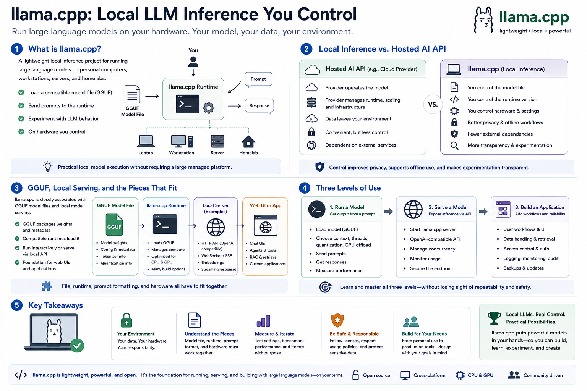

What Is llama.cpp?
Connecting to LMS... Progress: in progress

Narration
llama.cpp is a lightweight local inference project for running large language models on personal computers, workstations, servers, and homelabs. It is popular because it makes local model execution practical without requiring a large managed platform. A user can load a compatible model file, send prompts to the runtime, and experiment with language model behavior on hardware they control.
Local inference is different from using a hosted AI API. With a hosted service, the provider operates the model, runtime, scaling layer, and much of the infrastructure. With llama.cpp, the user controls the model file, runtime version, hardware, performance settings, and deployment pattern. That control can improve privacy, support offline workflows, reduce dependency on external services, and make experimentation more transparent.
llama.cpp is closely associated with GGUF model files and local model serving. GGUF packages model weights and metadata in a format that compatible runtimes can load. llama.cpp can run models interactively, expose local server endpoints, and act as a foundation for web UIs or applications. The file, runtime, prompt formatting, and hardware all have to fit together.
It helps to separate three levels of use. Running a model means loading it and getting output from a prompt. Serving a model means making that inference available through an API or local service. Building an application means wrapping that service with user workflows, data handling, access control, logging, and reliability expectations. Getting started with llama.cpp is about learning all three levels without losing sight of repeatability and safety.